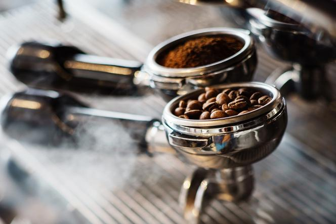

Jak przygotować?
 Aby zaparzyć prawdziwą, włoską kawę, najlepiej wlewać do automatu mineralną wodę, co nie tylko uchroni to urządzenie przed kamieniem, ale także wpłynie na jakość i smak kawy. Na jedną filiżankę przypada od 7 do 8 gramów kawy. Za każdym razem, gdy wsypiemy do kolby odpowiednią ilość zmielonej kawy, należy nią potrząsnąć, a następnie przycisnąć tamperem, co sprawi, że proszek rozprowadzi się równomiernie. Kawę nie należy parzyć dłużej niż 25 sekund. Jeśli kawa wypływa zbyt szybko, powinniśmy ją drobniej zmielić.